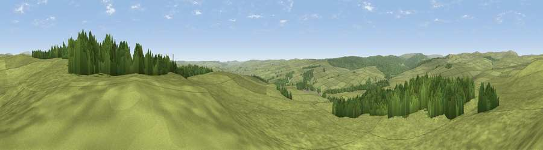

Viewpoint near Rochester
#12971 in England · top 34% of its area beats it · near RochesterThe view, rendered

A 360° render of this exact spot computed from the terrain model, tree cover and land cover — summer colours, afternoon light, calibrated against photographs of famous viewpoints. Real trees, hedges and buildings will differ in detail.
The panorama
Grey silhouette: terrain skyline in each direction (720 bearings, Earth curvature and refraction included). Dashed green: skyline with trees (+15 m) and buildings (+8 m) as obstacles. Blue strip: how far the ground is visible on each bearing.
Where the view opens
Wedge length = distance to the farthest visible ground on that bearing (vegetation-aware). Rings at 10, 25 and 50 km.
What fills the view
85% grassland · 15% woodland
Angular shares of the visible panorama (visual magnitude), not map area. Landscape diversity 0.19 (0–1 Shannon).
Key numbers
More beautiful places nearby
The staircase of upgrades: each row has a higher view potential than everything closer. Driving times are estimates from straight-line distance, calibrated against real road routing — check an actual route before setting out.
| Place | Direction | Drive | Score |
|---|---|---|---|
| Viewpoint near Rochester | NNE · 2 km | ~4 min | 66.4 |
| Viewpoint near Byrness | WNW · 5 km | ~11 min | 73.3 |
| Viewpoint near Byrness | NW · 8 km | ~16 min | 74.0 |
| Viewpoint near Byrness | NW · 8 km | ~16 min | 77.0 |
| Viewpoint near Byrness | NW · 9 km | ~17 min | 77.1 |
| Windy Gyle | N · 15 km | ~27 min | 79.7 |
| Wether Cairn [Wholhope Hill] | NE · 15 km | ~27 min | 80.7 |
| Viewpoint c12273_7856 | NNE · 16 km | ~29 min | 83.7 |
55.29318, -2.25390 · source: screening · position refined by local search. Computed location — check access rights before visiting.